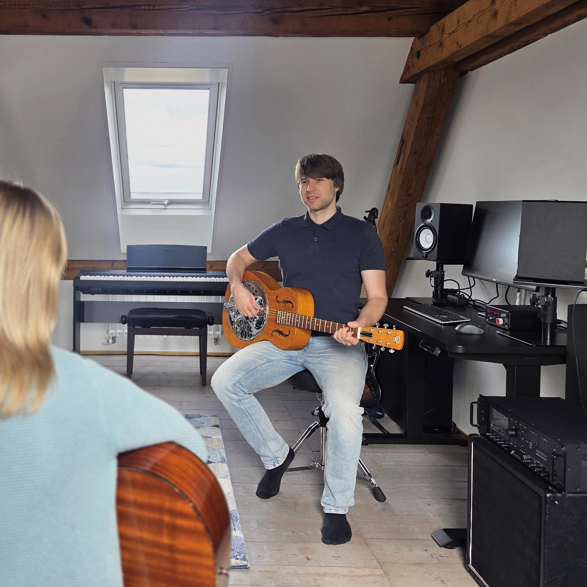
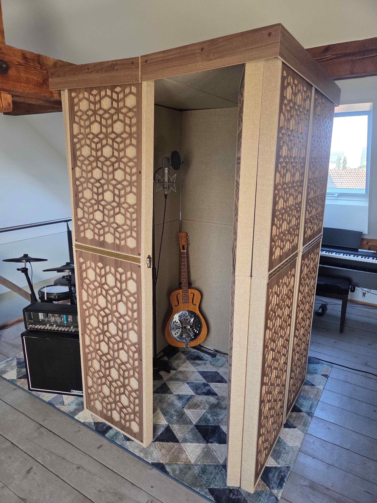

Welcome to Guitar Attic Basel, a beautiful creative space for learning and recording music. With high-quality equipment and an inspiring atmosphere, the studio is a perfect fit for both complete beginners exploring their first instrument and seasoned musicians wanting to produce their next release.

Hi there! I offer guitar, bass and music theory lessons in St. Johann for both beginner and intermediate players of all ages. In addition to learning about the foundations using a step-by-step approach, I strive to make your musical journey engaging and enjoyable by applying what you learn directly to real playing. Beyond the basic skills, I customize the classes to your individual goals whether that’s learning new songs, improvising, songwriting or anything else you would like to explore. Importantly, I also pay attention to ear-training along the way so that later on you can even learn music just by listening. I specialize in rock, blues and pop but I’m happy to cover other genres too.
On top of these, I also give piano and drum lessons for beginners. In case you’re not sure which instrument you want to learn, you even have the opportunity to try everything in the studio and pick your favorite one. I teach in English, German and Hungarian.
My name is Soma and I’m a guitarist and multi-instrumentalist with many years of teaching experience. Besides playing the guitar since the age of 13, I also formally studied music at the Szabolcsi Bence Music School in Budapest. Throughout the years, I have been part of multiple band formations in Budapest, Vienna, Berlin and developed solid skills in both live performance and studio recording. My current music project ‘The Midnight Shower’ won the POP Stipendium in 2023 and has received numerous positive reviews on an international level.
If you would like to get an impression of my teaching style, I invite you to a free trial lesson, which you can book via WhatsApp or email below. Feel free to come by even if you don't have your own guitar yet. In case needed, I can even support you in buying your first instrument.

I offer overdub recording and music production services with high-quality equipment. The studio can accommodate electric drums, electric/acoustic guitars, keyboards, electric bass, vocals, voice-overs and many other sound sources. Recording electric guitars is available by employing either a microphoned tube-amp setup or via high-end amp simulation. Vocals and acoustic instruments can be tracked using a professional recording booth using various renowned microphones. You can find the detailed equipment list here:
One-on-one music lesson:
75 CHF/45 min – The first trial lesson is free of charge
Recording/music production:
60 CHF/hour – When booking 8+ hours there is a discounted rate of 50 CHF/hour